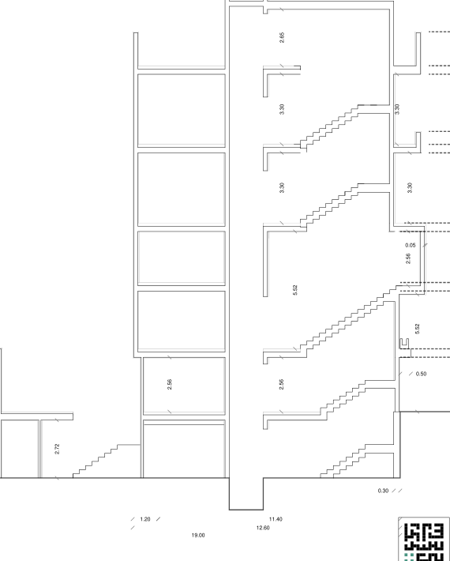

نقشه · طرح ۱۳۹۹
برش B-B
همهٔ ترازها، از −۳٫۱۲ تا بام +۱۶٫۲۸ و اتاقک پله روی آن

{kind=link}
برداشت
این برگه را باید از پایین به بالا خواند: از درختی که در گودال باغچه ریشه دارد و از خالیِ حیاط بالا میآید، تا اتاقک پلهای که روی بام نشسته. در میانهٔ راه، نشیمن طبقهٔ اول با سقف پنجونیممتری نفس میکشد و نیمطبقهای مثل بالکنی درونی در آن آویخته است. ایدهٔ برش همین است: خانه پشتهای از طبقات یکسان نیست؛ در ارتفاع بازی میکند.
با شاخصها میخواند
- شاخص ۱۸: زنجیرهٔ پلهها طبقهبهطبقه در دهانهٔ شمالی بالا میرود و رفتوآمد میان ترازها را در یک تصویر نشان میدهد.
- شاخص ۹: راهپله و آسانسور تا اتاقک بام ادامه دارد؛ راه همهٔ طبقات به بام باز است.
- شاخص ۱۳: یک زیرزمین با گودال باغچه و واحد سرایدار ترسیم شده، نه فقط انبار.
- شاخص ۱: نشیمن یکپارچهٔ طبقهٔ اول زیر سقف بلند، که تنها در این برگه به چشم میآید.
چه چیزی را کم دارد
- بام باغ فقط یک خط است؛ خاک و کاشتی روی آن نیست.
- طبقهٔ ۲− که شاخص سیزدهم اجازهاش را داده، در برش نیست.
- برش چیزی دربارهٔ کوچه نمیگوید: نه نما، نه عایق صدا.
چه چیزی اضافه میکند
- درختی که از زیرزمین تا حیاط بالا میآید و خانه را به خاک وصل میکند.
- نیمطبقهٔ آویخته در نشیمن بلند: اتاقهای کوچکی که شاخصها نخواسته بودند و از ارتفاع به دست آمدهاند.
چه پرسشی باز میماند
- طبقهٔ ۲−: آیا گودال باغچه میتوانست یک طبقه پایینتر برود و اتاق مشترک ساختمان را روشن کند؟
- درخت: گونه، خاک و نوری که به این درخت میرسد روی برگه نیست.
- بام: بامی که همه به آن برسند و در آن سبزی بکارند چه شکلی دارد؟
چطور میشد بهتر باشد
- میشد طبقهای دیگر زیر گودال باغچه دید تا اتاق مشترک ساختمان جایی داشته باشد؛ چنین چیزی بعدها به فونداسیون اضافه نمیشود.
- میشد بام را با پرگولا یا سقفی نازک و نیمهشفاف پوشاند تا عملاً طبقهٔ پنجمی از آن درآید.
- میشد مسیر هوا از گودال تا بام را در همین برش نشان داد؛ برش جای طبیعی چنین ایدهای است.
جزئیات روی شیت
- نشانههای تراز در سمت راست برگه: −۳٫۱۲، ±۰٫۰۰، +۲٫۹۶، +۶٫۰۸، +۸٫۸۸، +۱۲٫۵۸، +۱۶٫۲۸ و +۱۷٫۸۸؛ هشت تراز روی یک برگه. نشانهٔ +۱۷٫۸۸ در لبهٔ راست با هیچ سقفی از اتاقک پله نمیخواند (اتاقک ۲٫۶۵ متر مفید بالای بام دارد) و روی برگه توضیح ندارد.
- عدد ۵٫۵۲ در میانهٔ برش: ارتفاع آزاد نشیمن طبقهٔ اول که دو طبقه است؛ کنارش ۲٫۵۶ برای زیرِ نیمطبقه و ۰٫۰۵ اختلاف کوچک کف نیمطبقه.
- ارتفاعهای آزاد دیگر: ۲٫۷۲ زیرزمین، ۲٫۵۶ پارکینگ، ۳٫۳۰ طبقهٔ دوم و سوم، ۲٫۶۵ اتاقک پله روی بام.
- درخت سبزرنگ در گودال باغچهٔ سمت چپ (جنوب) که از تراز −۳٫۱۲ بالا میآید و از خالیِ حیاط میگذرد؛ کنارش پلهای که از زیرزمین به حیاط میرسد.
- زنجیرهٔ پلهها در دهانهٔ شمالی که طبقهبهطبقه بالا میرود و چاه آسانسور که تا اتاقک بام ادامه دارد؛ اتاقک ۲٫۶۵ متر مفید بالای بام +۱۶٫۲۸ میرود.
- خط اندازهٔ پایین برگه: ۱٫۲۰ + ۱۱٫۴۰ = ۱۲٫۶۰ (کنسول و بدنه) و ۱۹٫۰۰ طول کل زمین.
- عدد ۰٫۵۰ کنار تراز +۲٫۹۶: کف بالاآمدهٔ طبقهٔ اول؛ ۰٫۳۰ ضخامت دال کف زیرزمین.
- پیشآمدگی ۱٫۲۰ متری طبقات بالا به سمت حیاط که بالای بدنهٔ همکف بیرون زده است.
فضاها
زیرزمین (واحد سرایداری، گودال باغچه)، پارکینگ همکف، نشیمن دوطبقه (۵٫۵۲)، نیمطبقهٔ اول (+۶٫۰۸)، طبقهٔ دوم، طبقهٔ سوم، چاه آسانسور، پلکان، اتاقک پله روی بام (۲٫۶۵ متر بالای +۱۶٫۲۸)
یادداشت
این برش ستون فقرات طرح ۱۳۹۹ است: تنها برگهای که نشان میدهد نیمطبقه چگونه در دل نشیمن بلند مینشیند و درخت چگونه از گودال باغچه تا حیاط بالا میآید. آنچه حل شده: ترازها، ارتفاعهای آزاد، جای آسانسور و پله. آنچه حل نشده: بام باغ (تراز +۱۶٫۲۸) فقط یک خط است و کاشتی روی آن ترسیم نشده؛ تراز −۲ که در شاخصها آمده اصلاً وجود ندارد؛ نما و سازه در هیچ برگهای نیست. کادر عنوان: MRS.KASHI`S-PROJECT / SECTION-B-B / مقیاس ۱/۱۰۰ / تاریخ ۱۳۹۹/۰۳/۱۵ / شمارهٔ A3_012 — این برگه از مجموعهٔ بازنگری الف است و در مجموعهٔ بازنگری ب برش تازهای نیامده. نشان مربعی معمار پایین راست برگه چاپ شده است.